Kapitel 4 Stetigkeit von Funktionen
Stetigkeit von Funktionen ist ein wichtiges Konzept, das in diversen Bereichen, darunter den Wirtschaftswissenschaften, zur Anwendung kommt.
Intuitiv betrachtet ist eine Funktion stetig, wenn ihr Graph keine “Brüche” oder “Sprungstellen” hat.
Beispiel 4.1 (Produktionsfunktion) Eine Produktionsfunktion verknüpft Inputfaktoren und Output eines Produktionsprozesses; formal: der Output \(y = f (x)\) wird mithilfe des Inputs \(x\) und der Produktionsfunktion \(f\) erzeugt. Die Produktionsfunktion eines Autoherstellers sei \(y = x/1050\), wobei \(y\) die Zahl der Autos (Output) und \(x\) die Zahl der Schrauben (Input) bezeichnet.
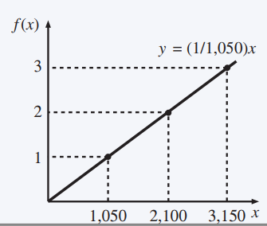
Der Definitionsbereich der Funktion ist \(\left\{ 1050n:n \in \mathbb{N} \right\}\) = \(\left\{ 1.050, 2.100, 3.150, ... \right\}\).
In der Praxis ist es leichter mit der Produktionsfunktion \(y = x/1050\), mit \(x \in \mathbb{R_+}\), zu arbeiten, z.B. um Entscheidungsprobleme zu lösen. 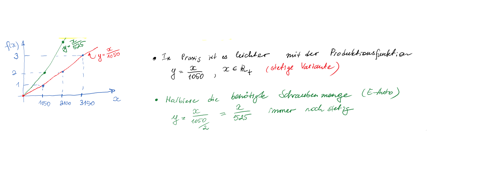
Aufgabe 4.1 (Bonusschema) Die Verkäufer der Gitarrenmanufaktur, in der Sophia gerade ihr Praktikum macht, erhalten monatlich:
ein Grundgehalt von \(800 \ €\);
plus eine Provision von \(10%\) pro verkaufte Gitarre;
plus einen Bonus von \(500 \ €\), falls der Umsatz \(20.000 \ €\) übersteigt.
Es sei \(S\) der Umsatz eines Monat; das Gehalt eines Verkäufers ist:
\(P = \begin{pmatrix} 800+0,01S, \text{ wenn } \ S<20000 \\ 1.300+0,01S, \text{ wenn } \ S \geq 20000 \end{pmatrix}\)
Einen Tag vor Monatsende haben drei Verkäufer folgende Umsätze erzielt: \(26000 €\), \(18500 €\), \(6000 €\).
Wer wird am letzten Tag am härtesten arbeiten?
Antwort
Mitarbeiter 2, da er dann wahrscheinlich die Schwelle für die Bonuszahlung (20000€) erreicht. 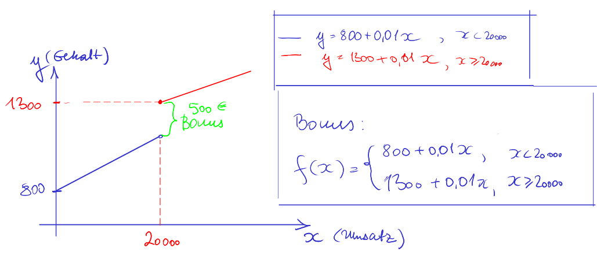Was gäbe möglicherweise einen besseren motivatorischen Anreiz für die Gitarrenverkäufer?
Zwei mögliche Antworten (weitere Alternativen sind denkbar):
Möglichkeit 1
- mehrstufige Bonusvariante 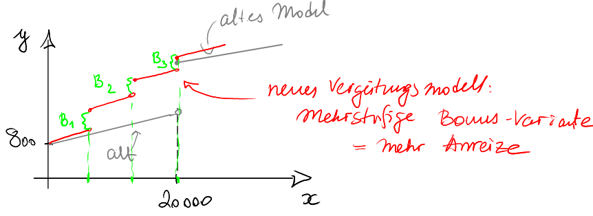
Möglichkeit 2
- stetige Gehaltsfunktion. 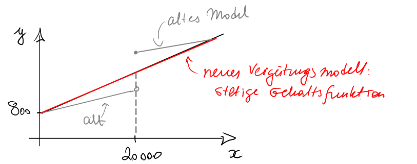
Frage:
4.1 Punktweise Stetigkeit
Wir betrachten zunächst die Stetigkeit einer Funktion \(f (x)\) in einem Punkt mit generischer Bezeichnung \(a.\)
Definition 4.1 (Punktweise Stetigkeit) Die Funktion \(f:D \rightarrow \mathbb{R}\), mit \(D \subseteq \mathbb{R}\), ist stetig in \(a \in D,\) wenn für jede Folge \((x_n)_{n \in \mathbb{N} },\) die gegen \(a\) konvergiert, gilt, dass \(f (x_n)\) gegen \(f(a)\) konvergiert. Formal: \[\lim\limits_{n \rightarrow \infty} x_n=a \ \Rightarrow \ \lim\limits_{n \rightarrow \infty} f(x_n)=f(a).\]
Da dies für jede Folge gilt, können wir den Bezug zu einer bestimmten Folge vernachlässigen und schreiben: \[\lim\limits_{x \rightarrow a} f(x)=f(a).\]
Die folgenden Beispiele zeigen, wie man punkweise Stetikeit nachvollziehen kann.
Beispiel 4.2 (Punktweise Stetigkeit I) Wir zeigen, dass \(f (x) = x^2\) , \(x \in \mathbb{R}\), stetig ist für beliebiges \(a \in \mathbb{R}\).
Es sei \((x_n)_{n \in \mathbb{N} }\) eine Folge mit \(\lim\limits_{n \rightarrow \infty} x_n=a\).
Also: wählt man ein beliebiges \(δ > 0\), so gilt \(|x_n − a| < δ\) für alle \(n\), die groß genug sind (also z.B. \(n > N_δ\)).
Damit gilt:
\(\lvert f(x)-f(a) \rvert = \lvert x_n^2-a^2 \rvert\)
\(= \lvert (x_n-a) (x_n-a+2a)\rvert\)
\(= \lvert x_n-a \rvert \lvert x_n-a+2a \rvert\)
\(\leq \lvert x_n-a \rvert ( \lvert x_n-a \rvert+ \lvert 2a \rvert )\)
\(< \delta ( \delta+2 \lvert a \rvert )\)
Da \(\delta > 0\) beliebig klein gewählt werden kann, ergibt sich, dass auch der Abstand \(|f (x_n) − f (a)|\) beliebig klein wird, wenn man nur \(n\) groß genug wählt. 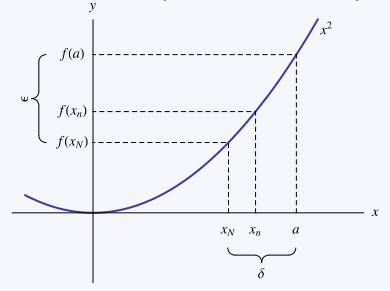
Beispiel 1.1 (Nutzenmaximierung) Die Funktion \(f(x) = \begin{pmatrix} +1, falls \ x \leq 0\\ -1, falls\ x>0 \end{pmatrix}\), ist unstetig an der Stelle \(0\). Wir wählen die Folge \(x_n = 1/n \cdot (−1)^n\) , \(n \in \mathbb{N}\).
Die folgende Graphik zeigt \(x_n\) und \(f (x_n) = (−1)^n\) , \(n = 1, ... , 20\).
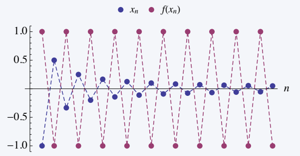
Es zeigt sich also, dass \(\lim _ {x \rightarrow \infty } x_n = 0\), hingegen \(f (x_n)\) keinen Grenzwert hat, woraus die Unstetigkeit von \(f\) an der Stelle \(0\) folgt.
Gleiches lässt sich aus dem folgenden Graphen ablesen: Obwohl \(x_1,x_2, ...\) gegen \(0\) gehen, springen die Werte f\((x_1),f (x_2), ...\) zwischen \(−1\) und \(1\) hin und her.
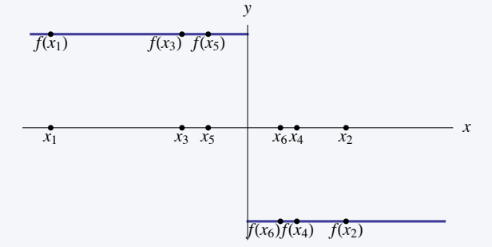
Auch wenn die Funktion \(f(x) = \begin{pmatrix} +1, falls \ x \leq 0\\ -1, falls\ x>0 \end{pmatrix}\), aus dem vorherigen Beispiel unstetig in \(0\) ist, erfüllt sie eine schwächere Form der Stetigkeit in \(0\).
Ein weiterer Blickwinkel auf die punktweise Stetigkeit einer Funktion bietet die folgende richtungsabhängige Betrachtung des Funktionsverhaltens.
Definition 4.2 (Links- und Rechtstetigkeit)
- Eine Funktion \(f:D \rightarrow \mathbb{R}\) ist linksstetig in \(a \in D\), wenn für jede Folge \((x_n)_{n\in\mathbb N}\), die von unten gegen \(a\) konvergiert, \(f (x_n)\) gegen \(f (a)\) konvergiert, d.h. \(\lim _{x \uparrow a} f(x)= \lim _{x \rightarrow a^-} f(x) = f(a)\).
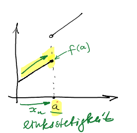
- Analog ist \(f:D \rightarrow \mathbb{R}\) rechtsstetig in \(a \in D\), wenn \(f (x_n)\) gegen \(f (a)\) konvergiert, für jede Folge \((x_n)_{n\in\mathbb N}\), die von oben gegen \(a\) konvergiert, d.h.
\(\lim _{x \downarrow a} f(x)= \lim _{x \rightarrow a^+} f(x) = f(a)\).
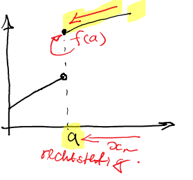
Mittels Grenzwertbetrachtung kann man also die punktweise Links- und Rechtsstetigkeit überprüfen. Das folgende Theorem gibt uns auch einen Ansatz, wie man die Konzepte der Links- und Rechtsstetigkeit für die Bestimmung, ob eine Funktion in einem vorgegebenen Punkt stetig oder nicht ist, benutzen.
Theorem 4.1 (Punktweise Stetigkeit) Eine Funktion \(f:D \rightarrow \mathbb{R}\) ist stetig in \(a \in D\) genau dann, wenn \(\lim _{x \uparrow a} f(x)= \lim _{x \downarrow a} f(x) = f(a)\).
Eine hilfreiche App zur Visualisierung der links- und rechtsseitigen Stetigkeit ist hier zu finden:
Beispiel 4.3 (Stetigkeit überprüfen) Es sei \(f:[0,10] \rightarrow \mathbb{R}\) definiert als
\(f(x) = \begin{cases} \lvert x-2 \rvert -2, &wenn \ 0 \leq x<2 \ oder \ 2 < x \leq 6 \\ \frac{2}{x-6} -2, &wenn \ 6< x <8 \\ (x-9)^3-1, &wenn \ 8 \leq x \leq 10 \\ 1, &wenn \ x=2 \end{cases}\). 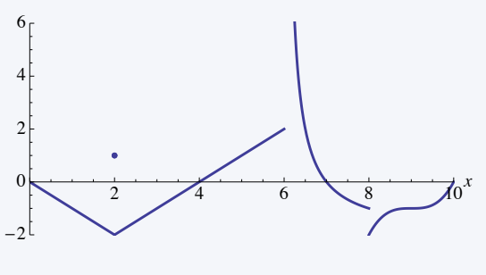
Die Funktion \(f\) ist unstetig in drei Punkten:
Es gilt \(f (6) = 2\), aber \(\lim_{x\downarrow 6} f (x) = \infty\);
Es gilt \(f (8) = −2\), aber \(\lim_{x\uparrow 8} f (x) = −1\).
Es ist \(f (2) = 1\), aber \(\lim_{x\uparrow 2} f (x) = \lim_{x\downarrow 2} f (x) = −2 \neq f (2)\).
4.2 Stetige Funktionen und deren Eigenschaften
Stetigkeit auf einem Bereich einer Funktion:
Bislang haben wir Stetigkeit in einem Punkt \((a \in D)\) betrachtet.
Jetzt erweitern wir diese Definition auf einen Bereich.
Definition 4.3 (Stetige Funktion) Eine Funktion \(f : D \rightarrow R, D \subseteq \mathbb R\), heißt stetig (auf \(D\)), falls sie in jedem Punkt \(a \in D\) stetig ist.
Die folgenden Sätze geben uns die Eigenschaften stetiger Funktionen.
Theorem 4.2 (Stetige Funktionen) \(f\) und \(g\) seien stetige Funktionen, zudem sei \(c \in \mathbb{R}\). Dann sind folgende Funktionen ebenfalls stetig:
\(c f (x)\),
\(f (x) + c\),
\(f (x) \pm g(x)\),
\(f (x) \cdot g(x)\),
\(f (x)/g(x)\), für \(g(x) \ \neq 0\),
\(f^{ (−1)} (x)\), wenn es existiert.
Theorem 4.3 (Komposition stetiger Funktionen) Es seien \(f : D \rightarrow\mathbb{R}\) und \(g : E \rightarrow \mathbb{R}\) Funktionen mit \(f (D) \subset E\) Wenn \(f\) und \(g\) stetig sind, dann ist auch die Funktion
\(g \circ f:D \rightarrow \mathbb{R} , \ g(f(x))\),
stetig.